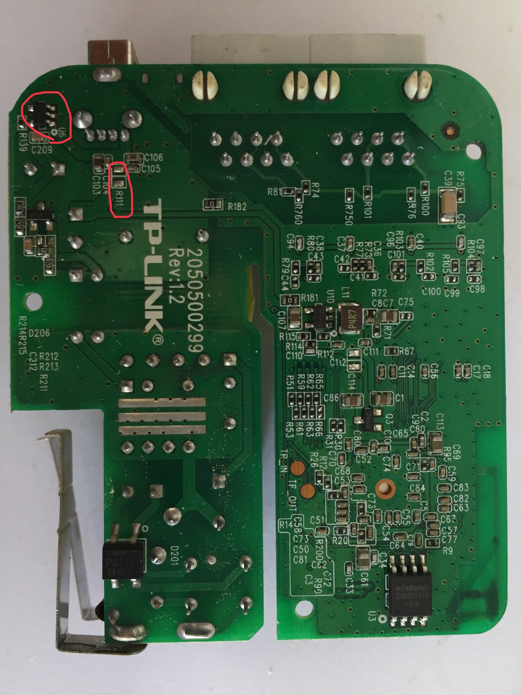
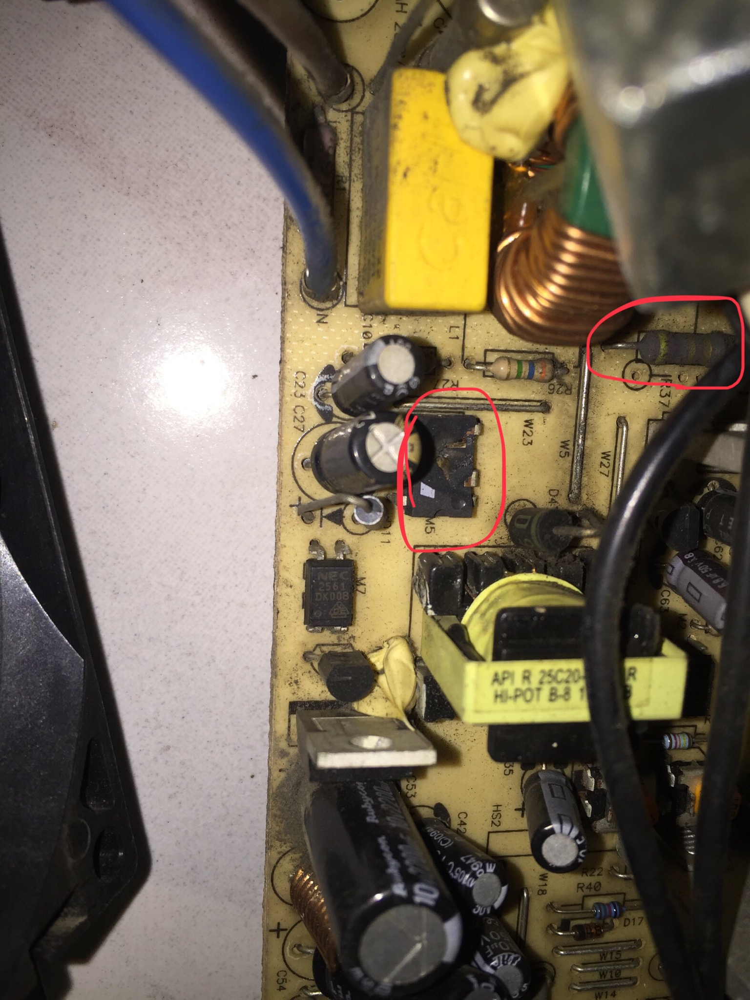

维修开关电源与led

TP-Link WL-WR710N USB输出5V给外部供电改为输入5V电源为自身供电
图中电路板左侧部分是开关电源
短路R111，焊掉U6 LDO（Low Dropout Regulator)低压差线性稳压器芯片

TNY278 16W TNY276 10W
电脑主机开关电源发生故障。电源芯片TNY276损坏裂掉，更换为TNY278
保险丝电阻也烧掉了，拆旧件来替换
联孚照明LED灯泡同时段坏了几个 有LED坏的 有开关电源驱动烧坏的
有个灯泡9w LED损坏 驱动良好
看芯片查手册确定电流源驱动 LED共18个 每个0.5w
电流源驱动 直接短路掉损坏的LED即可。由于散热不良 灯珠损坏。现只串联四个灯珠 提供2w功率的亮度
后记
无线路由经过更改后可以用充电宝供电，不用找市电，更加便携，可作为行走的WLAN。
连接电脑USB供电时，随电脑开关机，避免不必要的开机时间。
现在人们会有这样的观念修理不如换新，尤其对于电子产品。
在电子技术尤其芯片技术的快速发展的前一段时期，这种现象较明显，像传呼机、小灵通手机在退网之后大都停用或只能当时钟使用了。
进入稳定平稳的发展时期，维修会更被人们需要。
这台电脑主机是我在去年（2019年）冬天购买的二手机器，仅花费了200元，G31主板，大概10年前的机型。
2017年，我曾在本地一家电子店里打短工时遇到一台主机，他们转手维修，更换了新的开关电源，维修费用就是200元，是我买二手主机的价格。
这次维修的开关电源是AcBel PC6001 280W。做工用料都挺好，决定自己维修，过程不详述了。买了些工具，而主要用料成本就是电源芯片TNY278 10元。
处理不当会造成不必要甚至大量、严重的浪费。并且实际上有些新产品质量反而更差。
开关电源和LED的出现，很大的原因是要提高的能源的利用率。
2w的led亮度与20w的白炽灯亮度相差不大，而能量消耗却是后者的十分之一。白炽灯却不需要额外的电源电路。
开关电源效率80%以上，线性电源效率40%-60%，后者需要更大个儿的变压器。但开关电源电路更复杂，更多故障点。